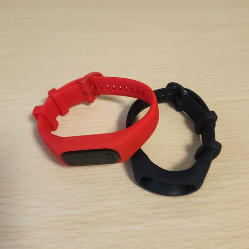
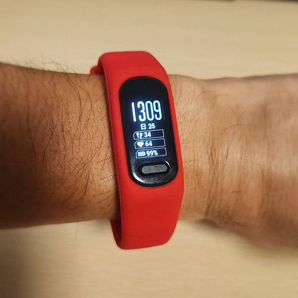
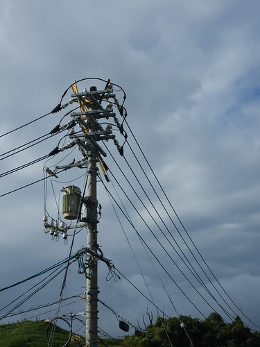
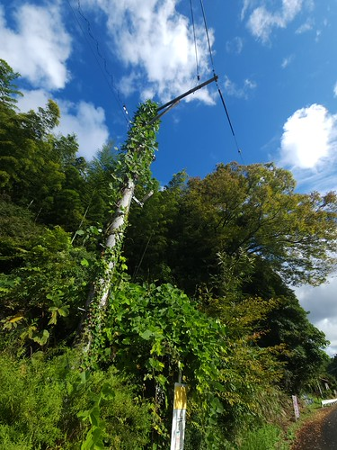
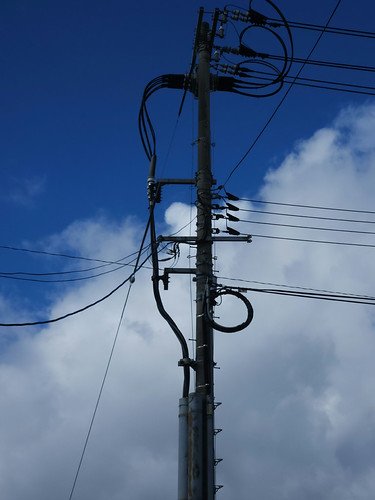
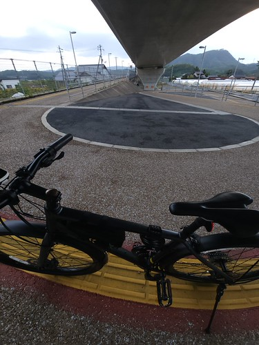
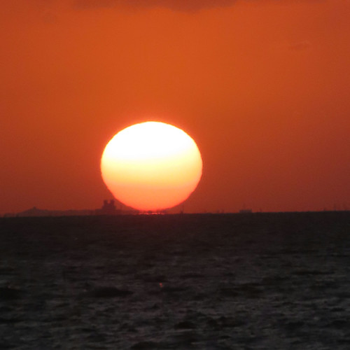
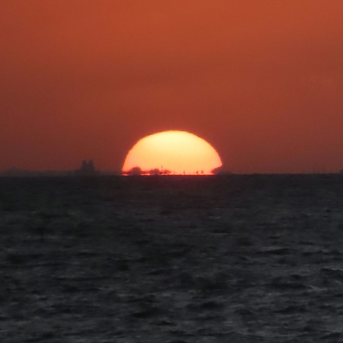
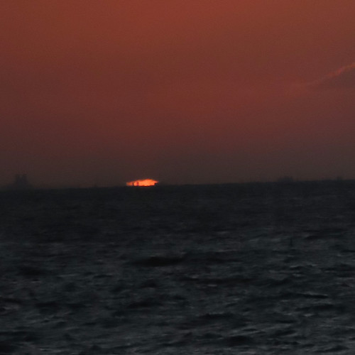
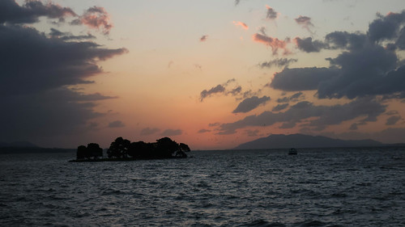

お散歩カメラ 2026-10-27

週末と翌月曜日は雨で遊びに出かけられず悶々としてたので，この日は遊び回ることにした。
スマートバンドのベルトが切れた
先週の話だが，常用のスマートバンドのベルトが切れてしまった。 まぁ，買って3年経つし，特に昨年と今年の夏の日差しは強烈だったので，劣化も仕方ないか。
とはいえ，こんだけ劣化が激しいなら純正品じゃなくていいか（どうせ壊れる）。 ということで，互換品を発注した。
問題なく翌日に到着。

今回は赤ベルトにしてみた。 還暦過ぎだし（笑） 装着してみた。

おっさんの腕ですみません 🙇 これでお出かけ準備OK。
電柱のある風景
明けて火曜日。 3日間降り続けた雨も明け方には上がり，ようやく自転車で出かけられるようになった。
ところでホロライブの大型新人，熱千めらさんの配信を見かけて

- 電柱ソムリエの一歩も動かないGeoGuessr【ホロライブ/熱千めら】
- メンバーシップ加入はこちらのじゃ！このURLからだと490円/月で加入できますのじゃ！https://www.youtube.com/channel/UC8eitCE9Z6EwUCs-VUi1blg/join本ゲームは GeoGuessr に確認の上配信・収益化を行なっております。サムネイルイラスト：@suhyu...
Powered by linkcard
そういや電柱メインで撮ったことないなと思い，今回は電柱を気にしながら移動することにした。 今回は，そのうちの3枚を紹介する。

松江市の郊外は，こんな感じのいかつい電柱が多い。
これも郊外でよく見る電柱。

いや，これ大丈夫か？っていつも思うんだけどね。
これは電柱をまじまじと見て気がついた写真。

おおっ。 ケーブルが地下に潜ってるよ。 ここって立体交差の側なので，空中に架線を張れなかったようだ。
松江駅や松江城などの市街部は電柱が見当たらないんだよね。 地下に潜ってるんだろうなぁ。 今後も電柱に注意してご近所観光をしていこう。
ヘアピンカーブ
先週の記事

- 長野県で「異空間みたいなヘアピンカーブ」に遭遇 緑に覆われた道路に「ジュラシックパークみたい」 | 概要 | LIMO | くらしとお金の経済メディア
- Xで話題の＠ArameyaMさんが投稿した長野県の珍しい道路をご紹介！偶然遭遇したヘアピンカーブはまるで異空間のようでした。不思議な光景にSNSでは「ジュラシックパークみたい！」「度肝を抜かれる」などの声が寄せられています。さらに記事後半では、長野県の2025年の観光地消費額について徹底解説。変わった道路やヘアピンカーブ、長野県の観光事情に関心がある方に必読の記事です！
Powered by linkcard
を見て「広角で撮ればいいのか！」と気がついた。 記事の写真ほどではないが，松江市内にもS字ヘアピンカーブがあるので撮ってみよう。
というわけで，縁結び大橋へ向かった。 スマホで目一杯広角にして撮った写真がこれ。

なるほど。 こんな感じに写るのか。 次はもうちょっと上手く撮る！
夕景
そろそろ帰ろうかな。
ありゃ。 いつの間に西の空に晴れ間が出てるよ。 もしかして宍道湖の日没が見れるか？
というわけで，急いで移動。
よし間に合った！ それでは宍道湖の日没の様子をどうぞ。




この日は霎1混じりの天気だったが，運がよかったね。
参考

- GARMIN(ガーミン) vívosmart 5 Black S/M バンド型スマートウォッチ 心拍計【日本正規品】
- ガーミン(GARMIN) (Release 2022-04-21)
- エレクトロニクス
- B09XGYX7JF (ASIN), 0753759301590 (EAN), 753759301590 (UPC)
- 評価
[Comment] サイクルコンピュータと Bluetooth または ANT+ で連携可能なスマートバンド（活動量計）として購入。 Garmin 製なのに自前では GPS 機能がない（スマホの GPS 機能と組み合わせて使う）。活動量計としての機能は十分というかありすぎる（笑）

- Canon コンパクトデジタルカメラ PowerShot ZOOM 写真と動画が撮れる望遠鏡 PSZOOM
- キヤノン (Release 2020-12-10)
- エレクトロニクス
- B08L4WKDZ7 (ASIN), 4549292179675 (EAN)
- 評価
[Comment] 望遠鏡型コンパクトデジカメ。メモリと充電器（要 Power Delivery）は別に用意する必要がある。使い勝手はまぁまぁ。